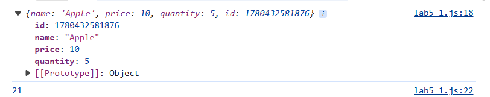
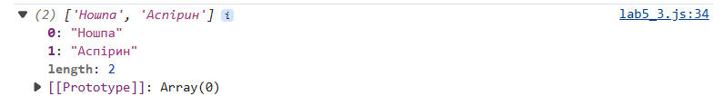
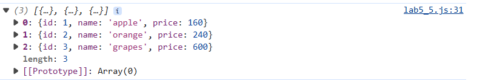
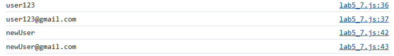
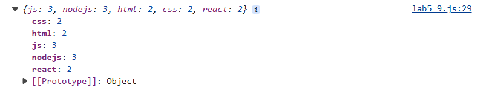
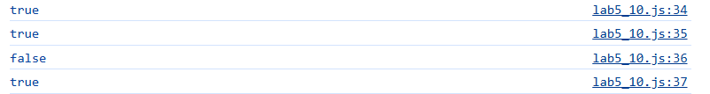
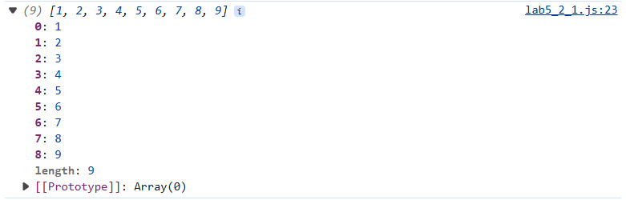
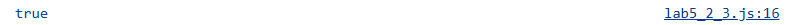
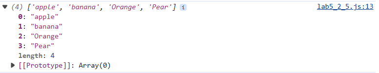
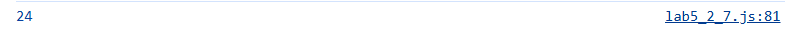

ЗВІТИ З ЛАБОРАТОРНИХ РОБІТ З
ДИСЦИПЛІНИ “Проєктування WEB-застосувань”
Виконавець: Студентка групи ІП-зп51 Масик Н.В.

Лабораторна робота №5
ЗАВДАННЯ №1
Формулювання: Напишіть наступні функції:
createProduct(obj, callback) – приймає об'єкт товару без id, а також коллбек.
Функція створює об'єкт товару, додаючи йому унікальний ідентифікатор у властивість id
та викликає коллбек, передаючи йому створений об'єкт.
logProduct(product) – коллбек, що приймає об'єкт продукту і логуючий його в консоль.
logTotalPrice(product) – коллбек, що приймає об'єкт продукту і логіює загальну вартість товару в консоль.
function createProduct(obj, callback) {
obj.id = Date.now();
callback(obj);
}
function logProduct(product) {
console.log(product);
}
function logTotalPrice(product) {
console.log(product.price * product.quantity);
}
// приклади в консоль
createProduct({ name: "Apple", price: 10, quantity: 5 }, logProduct);
createProduct({ name: "Banana", price: 7, quantity: 3 }, logTotalPrice);
Результати:

- Посилання на репозиторій: GitHub Repository
- Посилання на сайт: Live Demo
ЗАВДАННЯ №2
Формулювання: З об'єкту medicines потрібно отримати масив,
у якому будуть лише назви препаратів.
З масиву потрібно прибрати медикаменти, в яких строк зберігання уже пройшов.
У новому масиві відсортувати медикаменти у хронологічному порядку.
Результат вивести у консоль. Використати стрілочні функції.
const medicines = {
Аналгін: new Date("2022-05-01"),
Ношпа: new Date("2026-07-02"),
Альфахолін: new Date("2024-12-21"),
Аспірин: new Date("2026-08-15"),
Аспаркам: new Date("2024-04-18"),
};
const today = new Date();
const result = Object.entries(medicines)
.filter(([name, date]) => date > today)
.sort((a, b) => a[1] - b[1])
.map(([name]) => name);
console.log(result);
Результати:

- Посилання на репозиторій: GitHub Repository
- Посилання на сайт: Live Demo
ЗАВДАННЯ №3
Формулювання: Напишіть функцію, яка приймає масив об'єктів і повертає новий масив.
Зробіть знижку 20% на всі фрукти у масиві.
Надайте id для кожного продукту.
const fruits = [ { name: "apple", price: 200 }, { name: "orange", price: 300 }, { name: "grapes", price: 750 } ];
const fruits = [
{ name: "apple", price: 200 },
{ name: "orange", price: 300 },
{ name: "grapes", price: 750 },
];
function makeDiscount(fruits) {
return fruits.map((fruit, index) => {
return {
id: index + 1,
name: fruit.name,
price: fruit.price * 0.8,
};
});
}
const newFruits = makeDiscount(fruits);
console.log(newFruits);
Результати:

- Посилання на репозиторій: GitHub Repository
- Посилання на сайт: Live Demo
ЗАВДАННЯ №4
Формулювання: Напиши клас Client, який створює об'єкт
з властивостями login та email.
Оголоси приватні властивості #login та #email,
доступ до яких зроби через геттер та сеттер login і email.
class Client {
#login;
#email;
constructor(login, email) {
this.#login = login;
this.#email = email;
}
get login() {
return this.#login;
}
set login(newLogin) {
this.#login = newLogin;
}
get email() {
return this.#email;
}
set email(newEmail) {
this.#email = newEmail;
}
}
// приклади для тестів
const client1 = new Client("user123", "user123@gmail.com");
console.log(client1.login); // user123
console.log(client1.email); // user123@gmail.com
client1.login = "newUser";
client1.email = "newUser@gmail.com";
console.log(client1.login); // newUser
console.log(client1.email); // newUser@gmail.com
Результати:

- Посилання на репозиторій: GitHub Repository
- Посилання на сайт: Live Demo
ЗАВДАННЯ №5
Формулювання: Поверніть об'єкт, в якому вказано кількість тегів.
Очікуваний результат: { js: 3, nodejs: 3, html: 2, css: 2, react: 2 }.
const tweets = [
{ id: "000", likes: 5, tags: ["js", "nodejs"] },
{ id: "001", likes: 2, tags: ["html", "css"] },
{ id: "002", likes: 17, tags: ["html", "js", "nodejs"] },
{ id: "003", likes: 8, tags: ["css", "react"] },
{ id: "004", likes: 0, tags: ["js", "nodejs", "react"] },
];
// збираємо всі теги в один масив
const allTags = tweets.flatMap((tweet) => tweet.tags);
// рахуємо кількість кожного тегу
const tagCount = allTags.reduce((acc, tag) => {
acc[tag] = (acc[tag] || 0) + 1;
return acc;
}, {});
console.log(tagCount);

- Посилання на репозиторій: GitHub Repository
- Посилання на сайт: Live Demo
ЗАВДАННЯ №6
Формулювання: Напишіть функцію checkBrackets(str), яка приймає рядок JS‑коду і перевіряє правильність закриття дужок () { } [ ].
Якщо рядок містить коректний код — функція повертає true.
В іншому випадку — false.
function checkBrackets(str) {
const stack = [];
const brackets = {
")": "(",
"}": "{",
"]": "[",
};
for (let char of str) {
if (["(", "{", "["].includes(char)) {
stack.push(char);
} else if ([")", "}", "]"].includes(char)) {
if (stack.pop() !== brackets[char]) {
return false;
}
}
}
return stack.length === 0;
}
// приклади
console.log(checkBrackets("someFn()")); // true
console.log(checkBrackets("{[()]}")); // true
console.log(checkBrackets("{[(])}")); // false
console.log(checkBrackets("function() { [ ] }")); // true
Результати:

- Посилання на репозиторій: GitHub Repository
- Посилання на сайт: Live Demo
ЗАВДАННЯ №7
Формулювання: Дано масив об'єктів.
Створіть новий масив, що містить усі значення з масивів values кожного об'єкта, збережених в одному масиві.
Очікуваний результат: [1, 2, 3, 4, 5, 6, 7, 8, 9].
const data = [
{ id: 1, values: [1, 2, 3] },
{ id: 2, values: [4, 5, 6] },
{ id: 3, values: [7, 8, 9] },
];
let result = [];
for (const item of data) {
result = result.concat(item.values);
}
console.log(result);
// [1, 2, 3, 4, 5, 6, 7, 8, 9]

- Посилання на репозиторій: GitHub Repository
- Посилання на сайт: Live Demo
ЗАВДАННЯ №8
Формулювання: Дано масив чисел [2, 4, 6, 8, 10].
Перевірте, чи є кожен елемент масиву парним.
Очікуваний результат: true.
const numbers = [2, 4, 6, 8, 10];
let result = true;
for (let num of numbers) {
if (num % 2 !== 0) {
result = false;
break;
}
}
console.log(result); // true
Результати:

- Посилання на репозиторій: GitHub Repository
- Посилання на сайт: Live Demo
ЗАВДАННЯ №9
Формулювання: Відсортуйте масив рядків ["banana", "orange", "apple", "pear"] у порядку алфавіту.
Очікуваний результат: ["apple", "banana", "orange", "pear"].
const stringArray = ["banana", "Orange", "apple", "Pear"]; const result = stringArray.sort((a, b) => a.toLowerCase().localeCompare(b.toLowerCase()) ); console.log(result); // ["apple", "banana", "Orange", "Pear"]
Результати:

- Посилання на репозиторій: GitHub Repository
- Посилання на сайт: Live Demo
ЗАВДАННЯ №10
Формулювання: Розроби клас Calculator, який дозволяє виконувати арифметичні операції над числом за допомогою методів класу, підтримуючи ланцюжковий виклик (method chaining).
Вимоги до класу:
number(value)– встановлює початкове значення для наступних обчислень. Повертаєthis.getResult()– повертає поточний результат усіх операцій.add(value)– додає число до поточного значення. Повертаєthis.subtract(value)– віднімає число від поточного значення. Повертаєthis.multiply(value)– множить поточне значення на число. Повертаєthis.divide(value)– ділить поточне значення на число, якщо воно не дорівнює 0. Інакше викидає помилку. Повертаєthis.
class Calculator {
constructor() {
this.value = 0;
}
number(value) {
this.value = value;
return this;
}
add(value) {
this.value += value;
return this;
}
subtract(value) {
this.value -= value;
return this;
}
multiply(value) {
this.value *= value;
return this;
}
divide(value) {
if (value === 0) {
throw new Error("Ділення на нуль неможливе!");
}
this.value /= value;
return this;
}
getResult() {
return this.value;
}
}
// Приклад використання
const calc = new Calculator();
const result = calc
.number(10) // встановлюємо початкове значення 10
.add(5) // додаємо 5 → 15
.subtract(3) // віднімаємо 3 → 12
.multiply(4) // множимо на 4 → 48
.divide(2) // ділимо на 2 → 24
.getResult(); // отримуємо результат
console.log(result); // 24
Результати:

- Посилання на репозиторій: GitHub Repository
- Посилання на сайт: Live Demo
ВИСНОВКИ
У ході виконання лабораторної роботи №4 було розглянуто та реалізовано низку практичних завдань з використанням мови програмування JavaScript. Кожне завдання мало на меті закріплення навичок роботи з базовими конструкціями та функціями:
- Використання
prompt(),alert()таconsole.log()для взаємодії з користувачем. - Застосування умовних операторів
if...elseтаswitch-caseдля перевірки введених даних. - Робота з функціями: створення та виклик, передача параметрів, повернення результатів.
- Обробка рядків та перевірка їх вмісту за допомогою методів
toLowerCase()таincludes(). - Робота з масивами: створення, фільтрація, сортування, побудова нових масивів на основі умов.
- Реалізація алгоритму швидкого сортування для впорядкування даних.
- Створення двовимірних масивів та їх обробка, розділення на додатні та від’ємні числа.
- Розробка інтерактивного елемента «Підказка при введенні» для текстового поля.
Виконання завдань дозволило закріпити знання з основ програмування на JavaScript, навчитися застосовувати умовні оператори, цикли, функції та методи роботи з масивами. Окремо було розглянуто створення простих алгоритмів сортування та інтерактивних елементів інтерфейсу. Таким чином, лабораторна робота сприяла формуванню практичних навичок програмування та підготовці до більш складних завдань.